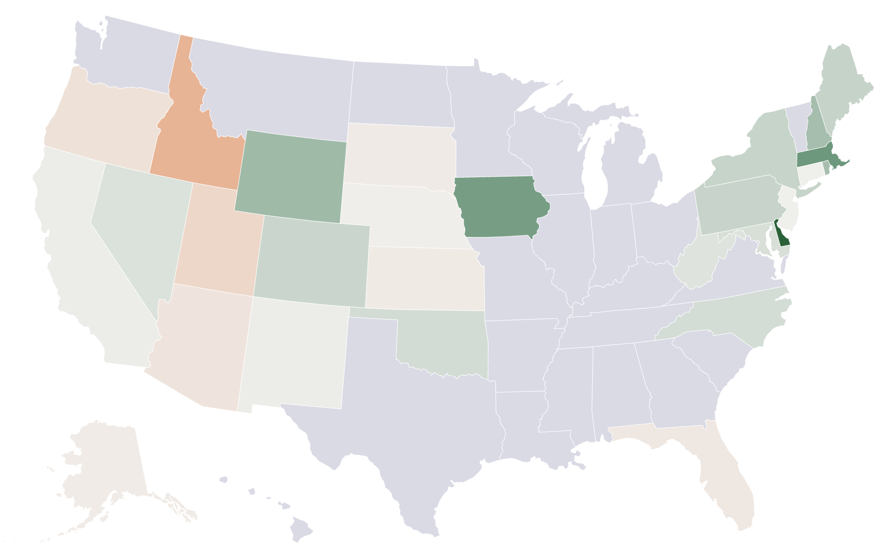
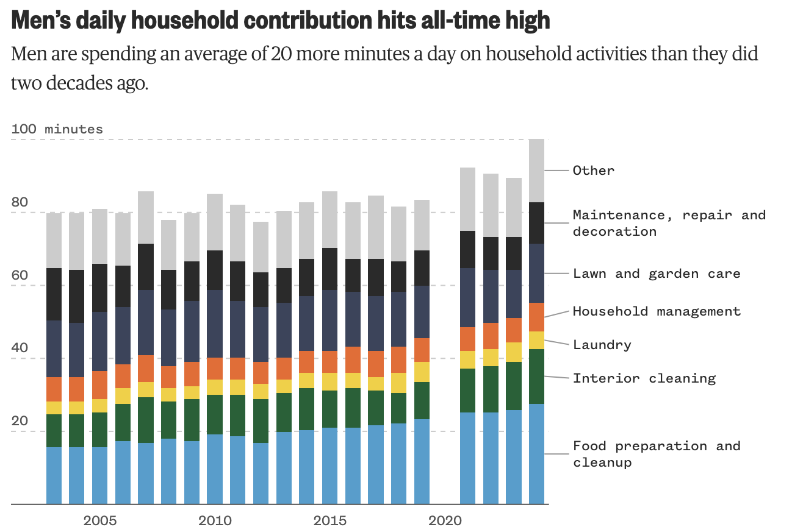
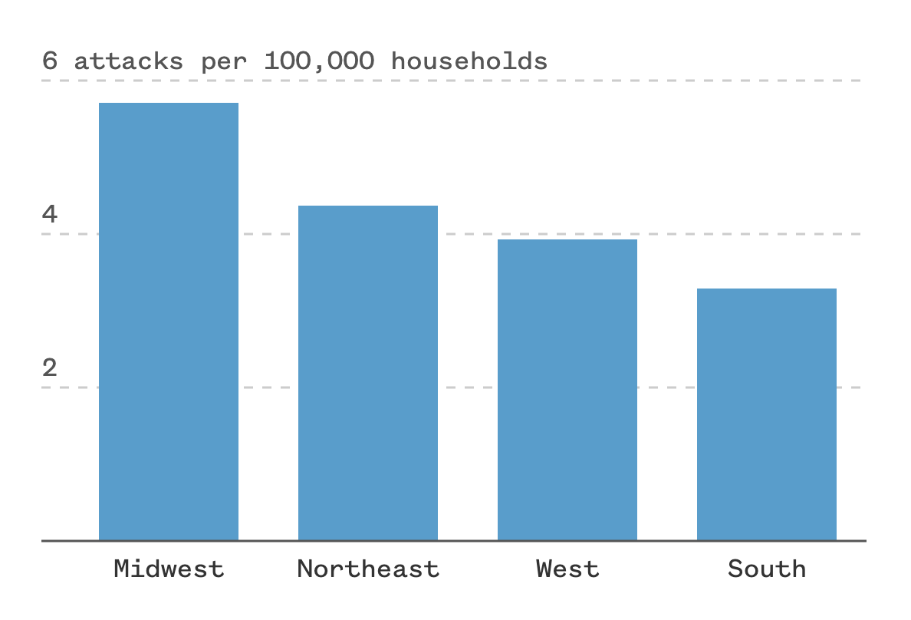
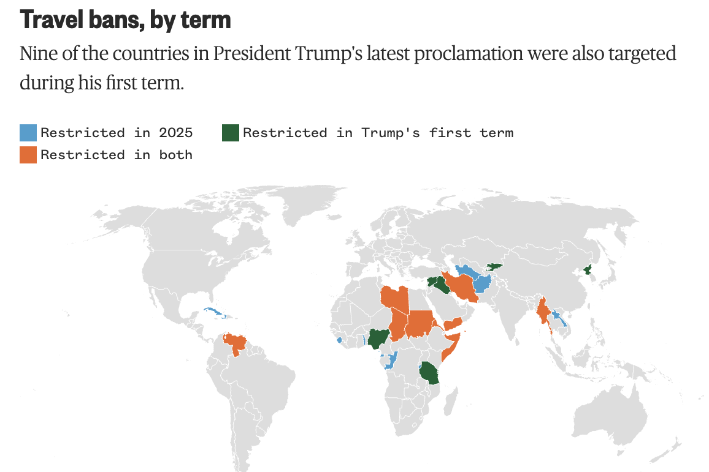
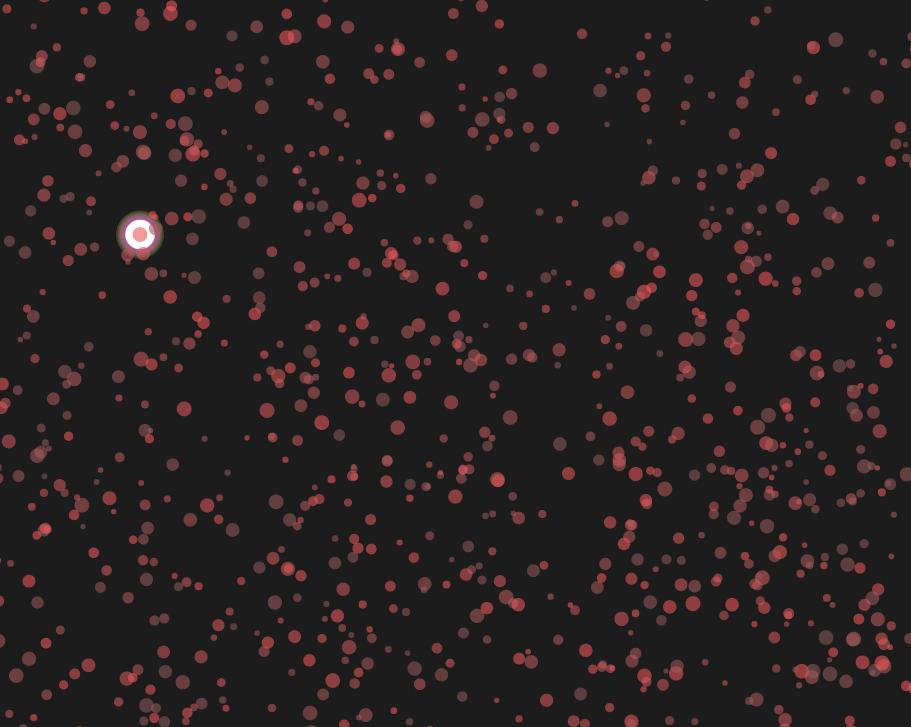
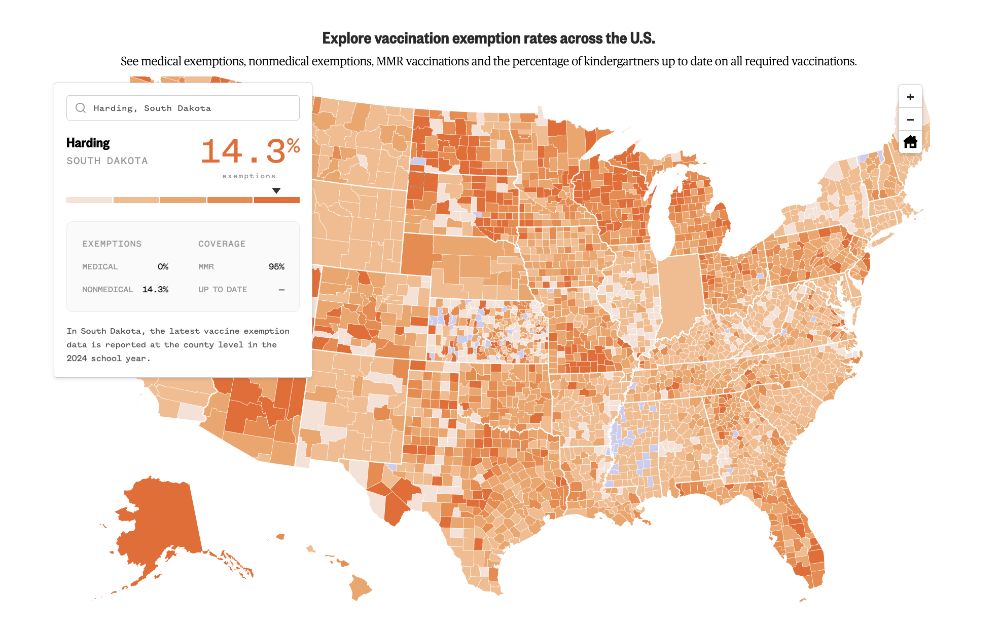
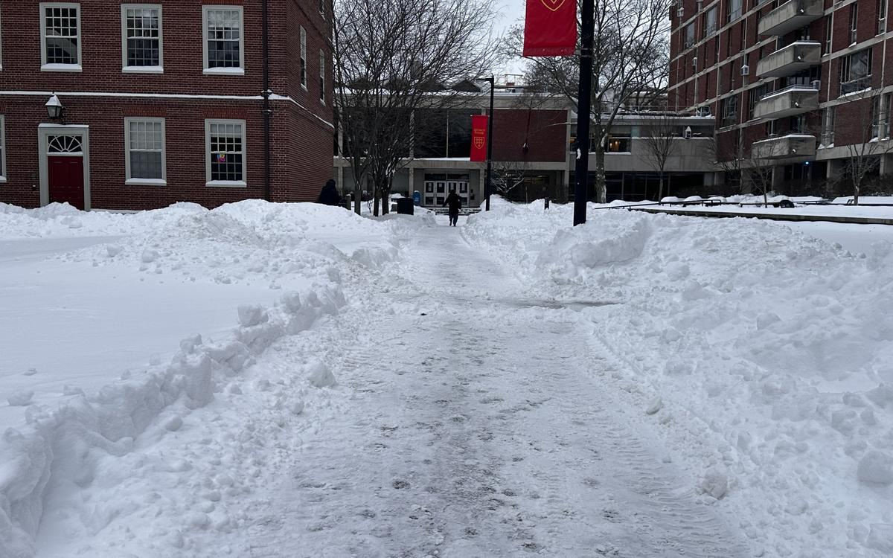
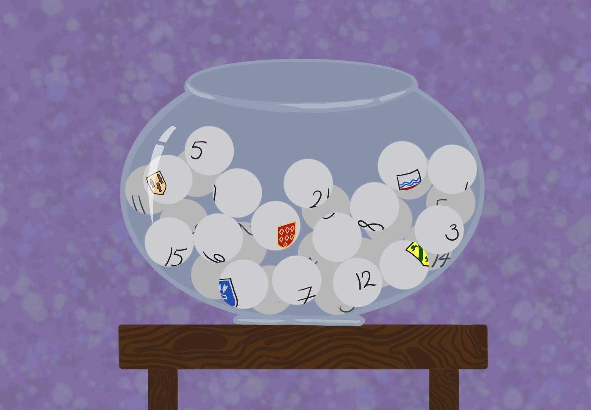

I'm a rising senior at Harvard University and a student data journalist. I'm currently a data reporting intern at the Minnesota Star Tribune. Previously, I was a data graphics intern at NBC News and served as president of Harvard's student data journalism group, the Harvard Open Data Project. On campus, I write for The Harvard Crimson and am a sociology research and course assistant.
Data Stories

Independent and third-party voter registration growing, largely at the expense of Democrats
NBC News

The Disappearing Act: The Human Cost of U.S. Immigration Enforcement
The Pudding Cup 2025 - Honorable Mention

U.S. men are contributing to household work more than ever
NBC News

Dog attacks on mail carriers reach 7-year high, Postal Service data shows
NBC News

Five charts that show how many people President Trump’s travel ban will affect
NBC News

Connecting the dots: a year of workplace fatalities
Graphics
I've analyzed data, technically developed, and built interactive visualizations for dozens of additional stories and personal projects. Here are my favorites, about:
{kind=link}
Reporting
The Theory, Born at Harvard, That Could Remake Right-Wing Jurisprudence
The Harvard Crimson

Growing Older and Wiser in Cambridge
The Harvard Crimson

The Vaccine Divide: Behind the data
Methodology for NBC News's Vaccine Divide investigation

Spring FDOC: Boston's 4th Snowiest Day
Harvard Undergraduate Data Project

Room & Bored? — Inside Harvard's Twelve Housing Lotteries
The Harvard Crimson
About Me
I'm a rising senior at Harvard University pursuing a joint concentration in sociology and statistics (data science track). I'm looking for full-time opportunities in data journalism starting June 2027!
Skills
- Interactive development: HTML, CSS, JavaScript (D3, p5)
- Data analysis: Python (pandas), R, SQL
- Visualization: Datawrapper, Flourish
- Design: Figma, Illustrator
- Other: Git, QGIS, Tableau, Looker Studio, Excel, Google Sheets
- I geek out over Census data, text analysis, and social network visualizations!
Education
-
Harvard University
A.B. Sociology & Statistics (Data Science Track)
Class of 2027